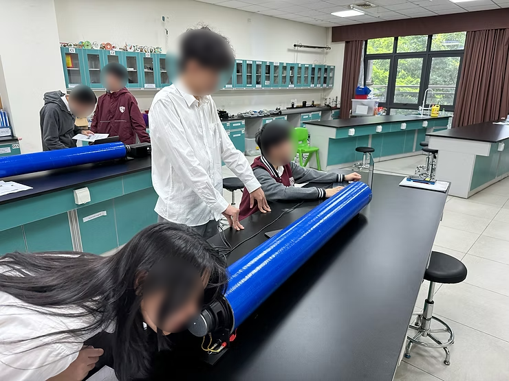

Teachers use inquiry-based teaching strategies and learning engagements. (0403-01-0100)

We utilized the PASCO scientific open speaker and resonance tube in a recent class activity. This innovative tool allowed our students to see and hear the phenomenon of standing waves, transforming what is often an abstract concept in physics into a tangible, relatable experience. It was particularly enlightening to relate this to musical instruments, like the clarinet one of our students plays, offering a practical context to the theory.